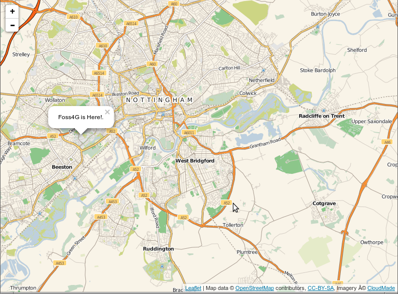
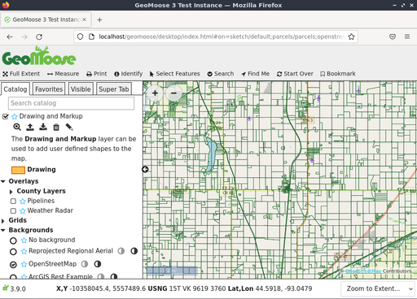
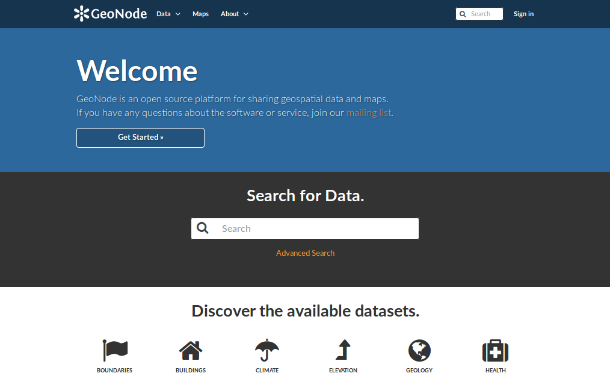
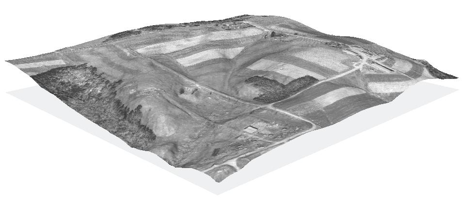

OSGeoLive¶
OSGeoLive
An Open Source Geospatial GNU/Linux Distribution
Press ESC to zoom out, SPACE / arrow keys to navigate, s for slide notes. Note: Pop-ups are blocked in some browsers due to security settings. Try Firefox or Safari.
What is OSGeoLive?

Components on OSGeoLive
- 50+ Open Source Geospatial Applications
- Sample Datasets
- Consistent Overviews & Quickstarts
- Translations
DVD / USB / Virtual Machine

Quality Criteria
- Established, stable, working software
- Active community
- Metrics

Production & Marketing Pipeline

What is new in 14.0
- Updated to Lubuntu 20.04 LTS
- Updated core packages based on DebianGIS
- QGIS 3.10.13, GDAL 3.2.1, PROJ 7.2.1, PostGIS 3.1.0, GRASS 7.8.5, GeoServer 2.18.0, MapServer 7.6.1 and many more…
- New projects added: GeoStyler, Re3gistry
- Download OSGeoLive ISO or VMDK (with even more software)
- Documentation updates
- OSM data for Buenos Aires
- Updated packages contributed back to UbuntuGIS
- Full changelog
Open Source Geospatial Foundation (OSGeo)

OSGeo
Non Profit for geospatial community, fostering:
- Free and Open Source Software
- Open Standards
- Open Education
- Open Research
- Open Data
An Open Source Geospatial GNU/Linux Distribution

OGC Standards
- Interoperability
- Future Proof
- Return on Investment
{kind=link}
Desktop GIS
QGIS GRASS GIS gvSIG Desktop uDig OpenJUMP GIS SAGA
QGIS

GRASS GIS

gvSIG Desktop

uDig

OpenJUMP GIS

SAGA

Browser Facing GIS
OpenLayers Leaflet Cesium Geomajas Mapbender GeoExt GeoMoose GeoNode GeoStyler
OpenLayers

Leaflet
{kind=link}
Cesium

Geomajas

Mapbender

GeoExt

GeoMoose
{kind=link}
GeoNode
{kind=link}
GeoStyler

Web Services
GeoServer MapServer MapCache deegree ncWMS EOxServer GeoNetwork pycsw PyWPS MapProxy QGIS Server istSOS 52 North SOS 52 North WPS Zoo Project t-rex Actinia Re3gistry pygeoapi
GeoServer

MapServer

MapCache

deegree

ncWMS

EOxServer

GeoNetwork

pycsw

PyWPS

MapProxy

QGIS Server

istSOS

52 North SOS

52 North WPS

Zoo Project

t-rex

Actinia

Re3gistry

pygeoapi

Data Stores
PostGIS SpatiaLite Rasdaman pgRouting
PostGIS

SpatiaLite

Rasdaman

pgRouting

Navigation and Maps
GpsPrune Marble OpenStreetMap iD editor JOSM OpenCPN
GpsPrune

Marble

OpenStreetMap

iD editor

JOSM

OpenCPN
{kind=link}
Spatial Tools
GMT OTB R Mapnik MapSlicer
GMT

OTB

R

Mapnik

MapSlicer

Domain Specific GIS
zyGrib
zyGrib

Data
Natural Earth North Carolina USA Educational dataset OpenStreetMap NetCDF Data Set
Natural Earth

North Carolina USA Educational dataset
{kind=link}
OpenStreetMap

NetCDF Data Set

Geospatial Libraries
GDAL/OGR GeoTools GEOS Proj.4 libLAS JTS
GDAL/OGR

GeoTools

GEOS

Proj.4

libLAS

JTS

Credits
- Developers and project maintainers
- Authors and reviewers of the documentation
- Translators
- https://live.osgeo.org/en/sponsors.html
Credits
Project Steering Committee
- Angelos Tzotsos (Chair)
- Brian M Hamlin
- Cameron Shorter
- Alex Mandel
- Johan Van de Wauw
- Bas Couwenberg
- Massimo De Stefano
- Astrid Emde
- Nicolas Roelandt
- Vicky Vergara
How can you get involved?
Become a member of our team
- Join our Mailing List and introduce yourself
- Take part in our weekly IRC meetings (channel
#osgeoliveon Freenode) - There are two ways you can help
- Help improve OSGeoLive website and documentation
- Submit new projects
Improving OSGeoLive Documentation
- Proof-read, test and correct Quickstarts and Overviews
- There is a good possibility to get to know cool software!
- Translate and improve the documentation
- Translation is made in Transifex
- Local Chapters can easily get involved here
- No technical experience necessary
Sponsors
| OSGeo | UCD ICE | NTUA |
|
||
| DebianGIS | okeanos | Georepublic |
 |
 |